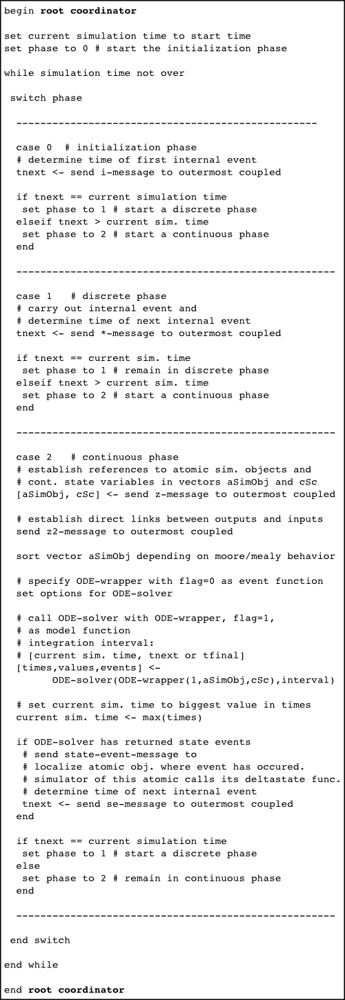

PDEVS Root Coordinator for Hybrid Models
stored in DEVS_PATH/r_c_hybrid.p
Is provided as p-code.
Contents
Description
Hybrid DEVS root coordinator for parallel DEVS with ports (experimental status).
This root coordinator implements the Wrapper Concept for hybrid DEVS modeling and simulation. Read more about the concept e.g. in C. Deatcu, T. Pawletta: A Qualitative Comparison of Two Hybrid DEVS Approaches. In: Simulation Notes Europe (SNE), Vol. 22(1), ARGESIM/ASIM Pub. TU Vienna, Austria, April 2012, Pages 15-24. (Print ISSN 2305-9974, Online ISSN 2306-0271, doi:10.11128/sne.22.tn.10107)
In a hybrid, modular hierarchical model, continuous model parts are typically distributed over several model components. To allow the deployment of advanced numerical integration methods for computation without a previous model flattening, these distributed continuous model parts need to be collected, united and provided in a way suitable for the chosen ODE solver’s interface. An ODE wrapper function supplies the closed representation of continuous model parts required by the ODE solver. Coevally, structure information remains available. The modular hierarchical model itself is not modified. Rather, a closed representation of continuous model parts is generated additionally during simulation runtime.
A discrete PDEVS root coordinator is therefore extended to operate in three different phases: i) initialization phase, ii) discrete phase, and iii) continuous phase.
Usage
Call: [root_model,tout,yout,teout,yeout,ieout]=r_c_hybrid(root_model,tstart,tend,plot_params)
Input arguments:
root_model : type is hybridcoupled object
tstart : type is double, start time for simulation
tend : type is double, end time for simulation
plot_params : type is structure, optional parameter
Ouput arguments:
root_model : type is hybridcoupled object
tout : vector of time values (returned by ode45)
yout : vector of continuous values (returned by ode45)
teout : vector of event time values (returned by ode45)
yeout : vector of continuous values at event times (returned by ode45)
ieout : vector of indices of event functions (returned by ode45)
Variables used in simulator:
gt : type is double, current simulation time
state : type is integer, 0 = startup state, 1 = discrete state, 2 = continuous state
gstatvec : global state vector for continuous states (initial conditions)
Globals
All globals are usually set in initialization script of model.
- HYBRID : needs to be 1 for hybrid simulation
- SIMUSTOP : to stop simulation by condition, SIMUSTOP = 0 --> simulate, SIMUSTOP = 1 --> stop simulation. Set to 0 in initialization script of model. Can be manipulated in any part of the model
- ODEPLOT : to allow plotting of continuous variables during simulation, ODEPLOT = 0 --> no plotting, ODEPLOT = 1 --> plotting; if plotting, plot_params need to be passed as optional parameter
Simulation Loop
The hybrid root coordinator operates in three different phases:
- Initialization phase,
- Discrete phase,
- Continuous phase.
The listing below gives an impression of the simulation algorithm.

Listing: Root coordinator algorithm
In addition to the well-known messages from traditional DEVS simulators, i-message, *-message, x-message, and y-message, we introduce a z- and a z2 message for vector configuration purposes and an se-message for handling state events of the continuous model parts. For exact mapping of simultaneous events we use an interpellation y-message. At startup of a simulation run, the initialization phase is entered and the model is initialized by an initialization message (i-message) sent by the root coordinator to the outermost coupled model. The initialization message is passed down the hierarchy among the simulation objects until it reaches the leaves of the object tree. Based on the minimum of time stamps for the next internal events (as they are returned by the subcomponents), the root coordinator determines whether a discrete or a continuous simulation phase has to be started next. If there is no imminent internal event at current simulation time, a continuous cycle/ is initiated and starts with an update of the wrapper data structures. For this purpose the root coordinator sends recursive configuration messages (z- and z2-message) to the associated hybrid coordinator of the outermost hybridcoupled model. Those messages are passed down the hierarchy tree. References to all hybrid atomic simulation objects as well as direct references to all continuous state variables contained are returned. Furthermore, direct links between continuous output and input variables are established by interpreting the coupling relations. This linking information is written back to atomic simulation objects with the z2-message.
DEVS Tbx Home Examples Modelbase << Back